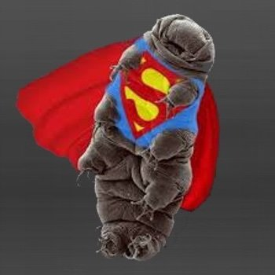

|
Los tardígrados, también llamados osos de agua, son criaturas de menos de un milímetro
de largo que pueden sobrevivir cuando
son sometidas sometidas a
temperaturas de hasta 150 °C y congeladas a casi cero absoluto.
Resistente: Los tardígrados son extremadamente resistentes y pueden
sobrevivir en condiciones adversas como temperaturas extremas, radiación intensa, deshidratación y
falta de oxígeno. Adaptable: Estos organismos son altamente adaptables y pueden habitar
en una amplia variedad de entornos, desde los océanos hasta las montañas, y
desde ambientes tóxicos hasta lugares con condiciones extremas. Pequeño: Los tardígrados son microscópicos,
lo que les permite habitar en espacios diminutos y
colonizar diferentes hábitats en todo el mundo.
|

|